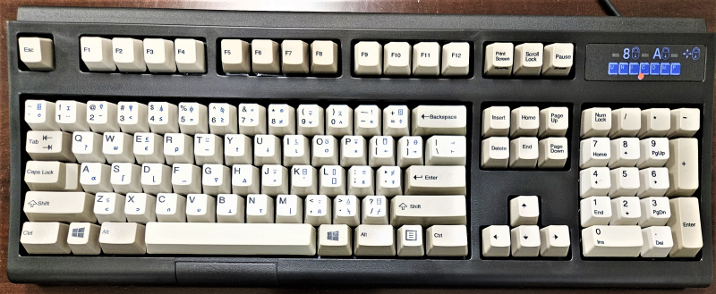
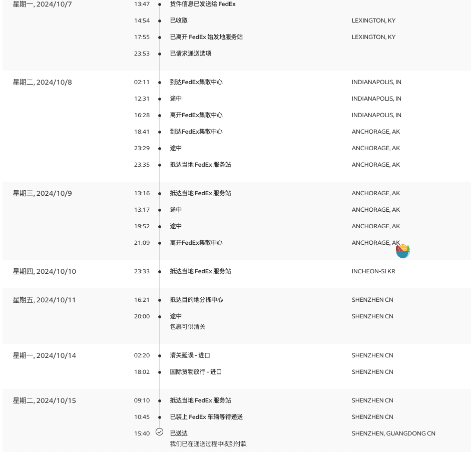
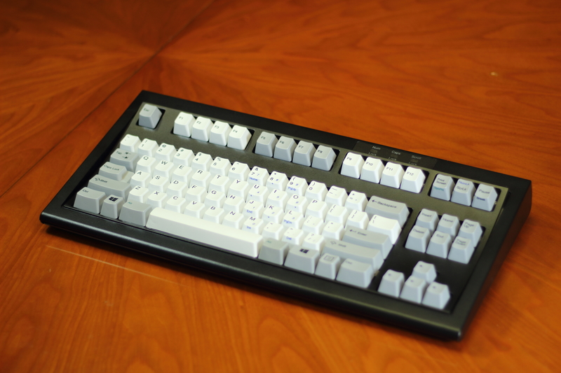
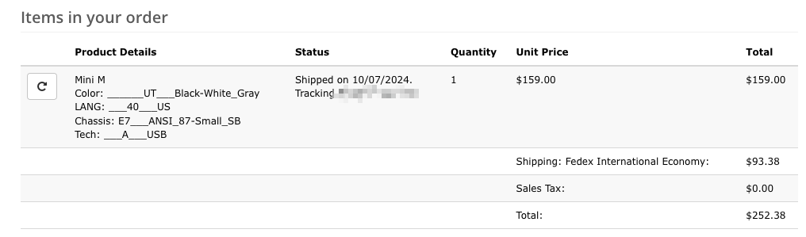
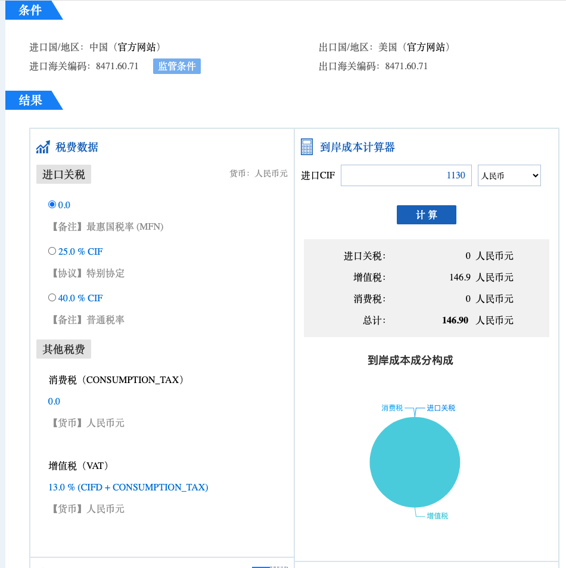

一次海外购物经历
前言
在逛 Emacs China 的时候，看到了一个帖子：2024 年，大家换了什么新键盘？，看到了很多各种各样的键盘。
其中有个人用的是 Unicomp Ultra Classic，好奇地去搜索了一下，它长这样：

Figure 1: Unicomp Ultra Classic
看起来很复古，不知为啥，挺喜欢这种复古类型的键盘的。
它的轴体比较特别，是一种叫 Buckling spring 的轴体，按键是靠一根弹簧去触发的。
带来的结果就是会比较响，像是那种复古打字机的声音，手感上也比较像打字机，会偏硬一点。
总之就是被种草了，我也好久没有换过键盘了，也想搞一把回来玩玩。
然而在淘宝和京东上都没有找到官方售卖的产品，倒是有一些代购，但有点不放心质量。
可能还有一些其他平台可以购买，但最终我选择了在官网购买。
由于 Unicomp 位于美国，也是我第一次直接从海外购物，遇到了一些“坑”，记录一下。
过程
键盘发货到时挺快的，我是在 10 月 6 日下的单，快递送到我手上是 10 月 15 日，一共 9 天。

Figure 2: 联邦快递物流
这次我买的是 Mini M，比较喜欢紧凑一点的键盘。

Figure 3: Unicomp Mini M Keyboard
下单
从官网选择想要的产品，然后按照步骤下单就好了，地址可能需要填写英文地址，找 GPT 把中文转换一下就行。
付款
官方建议非美国境内用 Paypal。
订单生成后，我碰到了第一个问题，就是海外运费实在太高了。

Figure 4: Unicomp 购买订单
但是咬咬牙还是下单了，淘宝上看到也要 1600+ 人民币，如果从官网买的话总价是 252.38 美元，大概是 1800 人民币左右，贵是贵了点，但是从官方购买会放心一点。
关税
本来以为下单完成，接着只需要等待收获就好了，但我忘了这是海外购物，需要过海关，交关税。
按照海关总署进一步规范对进出境个人邮递物品监管的规定：
一、个人邮寄进境物品，海关依法征收进口税，但应征进口税税额在人民币50元（含50元）以下的，海关予以免征。
二、个人寄自或寄往港、澳、台地区的物品，每次限值为800元人民币；寄自或寄往其它国家和地区的物品， 每次限值为1000元人民币。
三、 个人邮寄进出境物品超出规定限值的，应办理退运手续或者按照货物规定办理通关手续。 但邮包内仅有一件物品且不可分割的，虽超出规定限值，经海关审核确属个人自用的，可以按照个人物品规定办理通关手续。
我的键盘原价是 159 美元，换算人民币是 1130 人民币左右，超过了 1000，需要交关税。
要交多少税我之前也没有了解，查了一下大概是 13%，也就是 1130 * 13% 大概 147 人民币左右。
可以用外贸实务查询服务大致查询，先要找到商品的海关编码，然后基于海关编码查询。

Figure 5: 海关税
我的快递是委托的联邦快递，在要入关之前会发送短信，让你填写清关信息，主要是上传身份证件，购买记录，订单信息。
地址变更
最开始我填写的地址是家里，但是联邦快递只在工作日投递（周末好像要额外收费），而工作日我都在公司上班，只能改一下地址。
物件都还没有清关进入深圳，我以为改个地址应该是很容易的事情，但是沟通下来，需要打电话给客服进行变更，还需要收额外的变更费用以及其他什么服务费，感觉相当离谱，比国内快递麻烦很多。
最后快递送到我手上，我又补了 180 多，其中 147 是垫付的关税，另外的应该就是一些什么服务费之类的。
账单
| 内容 | 费用(美元) | 费用（人民币） |
|---|---|---|
| 键盘 | $159.00 | 1129.26 |
| 联邦运费 | $93.38 | 663.21 |
| 关税 | 147.00 | |
| 联邦未知服务费 | 37.64 | |
| 总费用 | 1977.11 |
最后
以后如果还需要海外购买一定要留意好关税，这次购物，各种其他费用加起来都快能买 2 个键盘了。(;´༎ຶД༎ຶ`)
关于键盘的使用，我写在了另一篇博客，也欢迎分享你用过的好用的键盘。